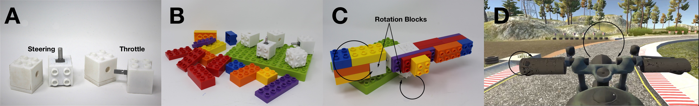
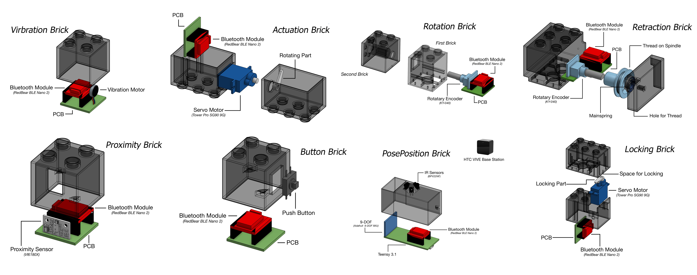
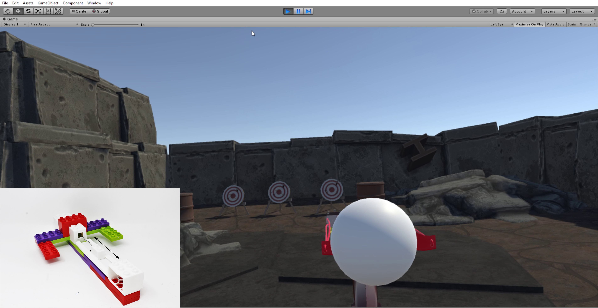

VirtualBricks
Often Virtual Reality (VR) experiences are limited by the design of standard controllers. This work aims to liberate a VR developer from these limitations in the physical realm to provide an expressive match to the limitless possibilities in the virtual realm. VirtualBricks is a toolkit that enables construction of a variety of physical-manipulation enabled controllers for VR, by offering a set of self-sufficient feature bricks that emulate as well as extend the capabilities of default controllers. Built around the LEGO® Duplo® platform, our toolkit facilitates explorations in creating custom controllers and haptics. We have also shared a custom standalone plugin for the Unity platform in addition to the 3D models of the Feature Bricks to ease the VR development process.
Virual Bricks consists of a set of Feature Bricks (image below) used to enable various physical manipulations, thus adding functionality. Each feature brick is self-contained, i.e. it contains a battery, a microcontroller, and a wireless communication module, thus enabling easy integration and flexible form. Our toolkit is designed to support multiple feature bricks at the same time, providing scalability. We inherit the modularity offered by LEGO®Duplo® bricks - which we refer as Structure Bricks - to assemble controllers of any shape and size. We build our toolkit to support HTC Vive base stations (position) and Unity (VR integration).
Virual Bricks can be used to create a variety of interactable controllers. For example in the application on the left, we can see a slighshot in a VR and physical realm. The shape of the controller (made using Lego) mimics an actual slingshot and the pull functionality is implemented using a proximity brick. The user can actually feel the strech of the slingshot because of a stretch wire.
VirtualBricks has been accepted at CHI 2019.